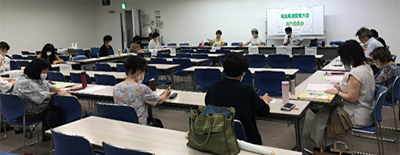

|
|
8月19日（水）13時30分より、浦和コミュニティセンター第15集会室にて、第5回実行委員会を開催し、18人（17団体）＊うちオンライン出席1人 事務局2人が出席しました。 【議題】 1．事務局長あいさつ 新型コロナウイルス感染拡大の現状から、大会の開催形態について本日確定したいと思いますので、よろしくお願いします。 2．第4回実行委員会報告について…確認しました 3．大会内容関連について…確認、話し合いました （1）開催における検討事項について…会場については埼玉会館ラウンジに、実参加は、実行委員会団体のみ、一般参加なしとし、記念講演は自宅からのライブ配信、事前収録含め想定する、消費者大会自体は当日YouTubeによるライブ配信、後日でも視聴できるYouTube配信、DVD配布を準備します。冊子資料、DVDの必要枚数を集約することとしました。なお、今後状況が変化した場合、会場や参加などについて随時検討、変更することも確認しました。  （2）役割分担について…全体会の流れを確認し、司会、大会アピール提案者については、浦和に集まりやすい団体に担当してもらうことを確認しました。 （3）予算について…会場費が大幅に削減できた分、ライブ配信のための費用がそれなりにかかること、大会冊子は部数が絞られる見通しだが、DVDの作成費用と送付費用がかかることなど、今年の特徴点について報告、確認しました。 （4）基調報告について…一次案を報告し、意見をいただきました。 （5）埼玉県への要請について…一次案を報告し、意見をいただきました。基調報告、要請ともに、引き続き団体からの意見も参考にしながら確定することとします。 （6）第7回実行委員会・埼玉県との懇談日程について…11月25日（水）埼玉会館ラウンジで開催することになりました。 4．市町村における消費生活関連事業調査について…進捗状況を報告しました。 5．その他…実行委員会団体にお知らせしました 9/7県内消費者団体全体研修会、9/19消費者力アップ学習会、11/27県内消費者団体地区別研修会などをご案内しました。 |